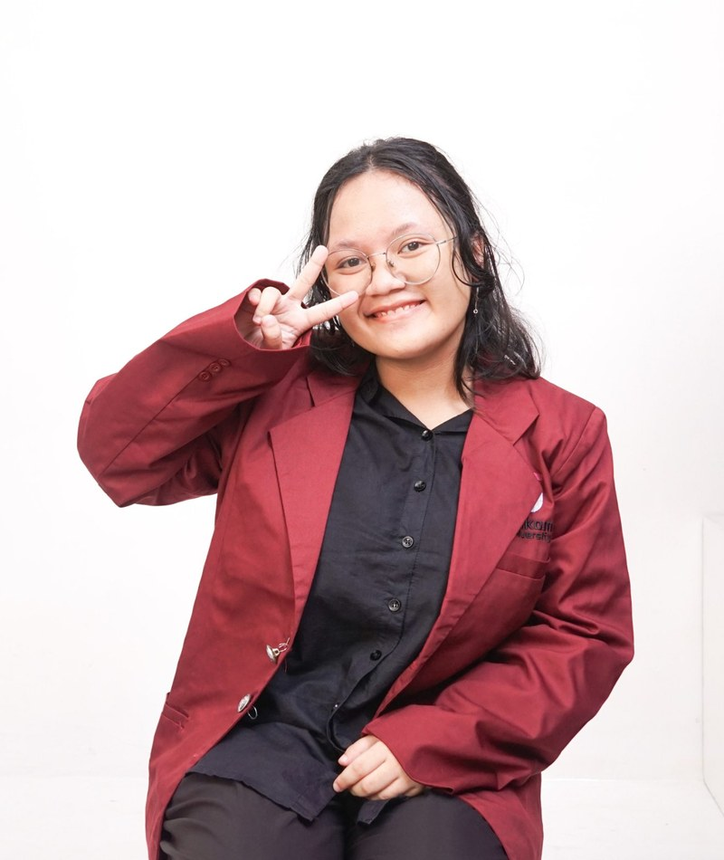

Saya mahasiswa Software Engineering di Telkom University Purwokerto dengan latar belakang pendidikan Teknik Komputer dan Jaringan dari SMK. Saya tertarik pada pengembangan perangkat lunak, desain UI/UX, dan desain grafis. Saya berpengalaman merancang antarmuka pengguna, membuat materi desain untuk kegiatan organisasi, serta mengonfigurasi jaringan. Saya senang belajar hal baru dan siap berkembang di bidang teknologi.
Telkom University Purwokerto
SMK Negeri 1 Cilacap
Tertarik berkolaborasi? Silakan hubungi saya lewat:
Jl. Jendral Sudirman No.148, Sidanegara